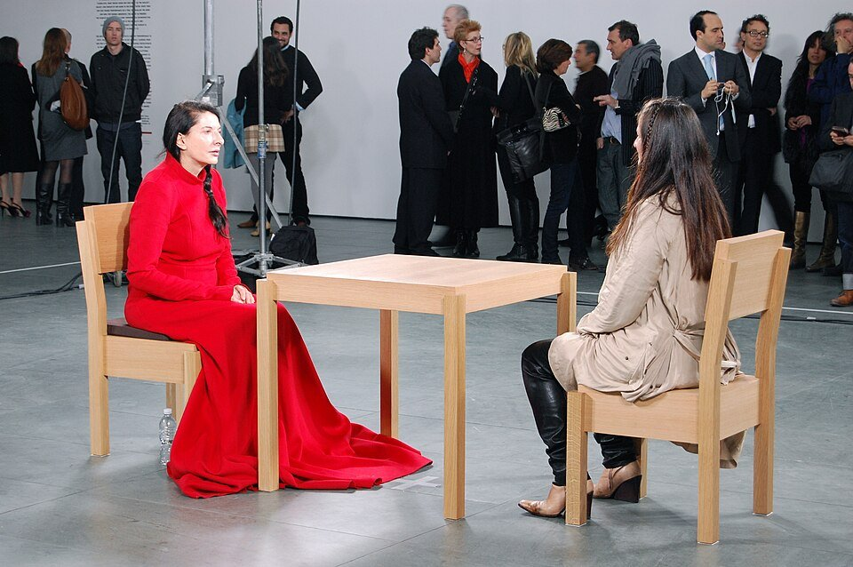

The Artist Is Present
Marina Abramović · 2010 · Performance, 736 hours 30 minutes (documentation photograph)
In copyright. Look and learn: shown for study, not for download. · Photo: Andrew Russeth, CC BY-SA 2.0
From 14 March to 31 May 2010, during her retrospective at the Museum of Modern Art, Marina Abramović sat without moving or speaking in the museum's atrium while visitors took turns in the chair opposite her, 736 and a half hours in all. The curator, Klaus Biesenbach, gave the piece its title. The photographer Marco Anelli made a portrait of every person who sat across from her. Ulay, her former partner in performance, turned up unannounced on the opening night. She was sixty-three.